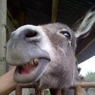

Content sponsored by
My name is Valérie Zamino.
I've been a vet for 15 years.
I currently live in Lekki, Nigeria.
I was born on June 1st 1980.
Animal lover from a tender age, I became a vet.
I love my job especially since I get to travel a lot.
I am originally from France but, at the moment, I live in Nigeria where can be found numerous endangered
animal and plant species, including the three-cusped pangolin, the colobus monkey and the Congo grey parrot.